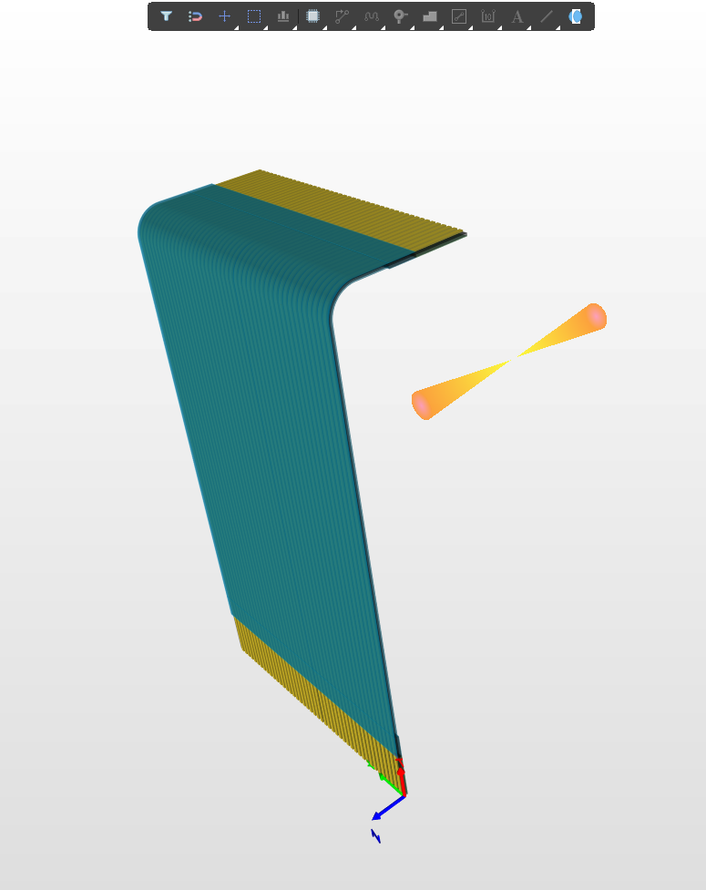
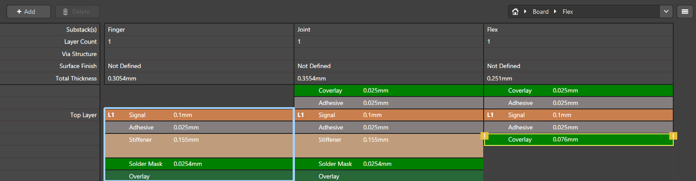

Orbit

As a member of UBC Orbit’s OBC (On-Board Computer) subteam, I’ve made various contributions and improvements to our satellite’s electronics.

Above is a custom FFC (Flat Flexible Cable) I designed to interface between the OBC (On-Board Computer) and COMMS subsystems.
I had to take a number of factors into consideration for this design:
- The COMMS board processes and amplifies received RF signals, so I had to design this board with high frequency signals of about 1-2A in mind.
- Also, conditions in space, even in low orbit, are much more hostile than those on Earth, so the materials were also chosen carefully.
- Instead of the polyester that most COTS cables are made of, I used a polyimide coverlay to minimize degassing, and a gold surface finish for longevity.
